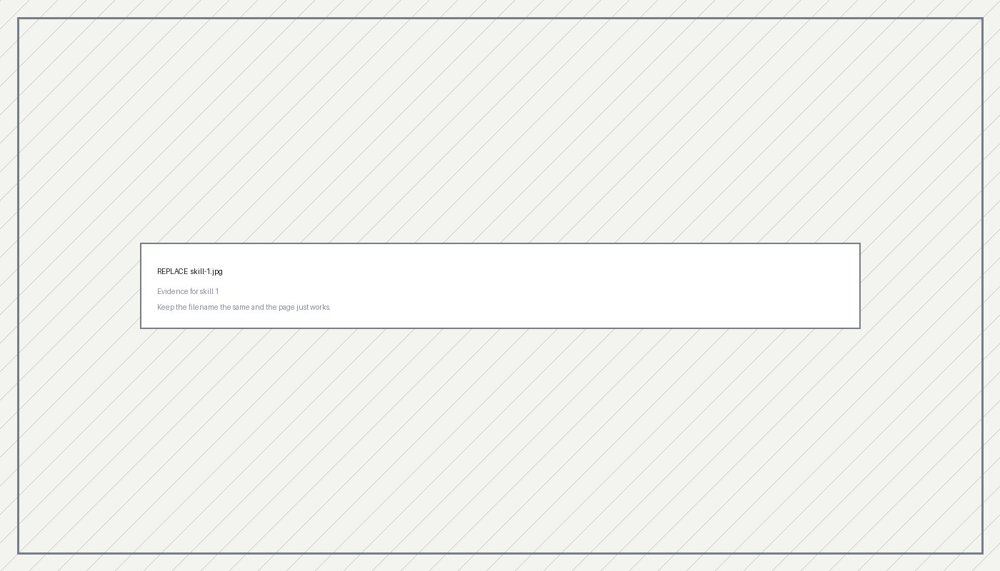

Skills
Three skills,
with the receipts
Two of these came out of my Skills Reflection assignment. Each one is paired with something I actually built or did, rather than a rating out of five.
Skill one
Name the skill specifically — "designing fail-closed validation logic" beats "Python"
What the skill is and why it matters in the work you want to do. Two or three sentences.
How I used it
A concrete situation — a task at Fuzzy AI, a piece of MediLens, a course project. What the problem was, what you did, what happened.
How it developed
What you could do at the end of the term that you couldn't at the start. Name the moment it shifted.
Evidence
Link a repo, a PR, a doc, a demo video, or a screenshot. If the internship work is confidential, describe it and link something adjacent you can share. MediLens is a strong candidate here — the fail-closed design and the requirement that every recommendation cites a note span are unusual constraints and worth explaining.
Skill two
Second skill from your Skills Reflection
What it is and why it matters.
How I used it
Concrete example.
How it developed
Before and after.
Evidence
Link or artifact.Skill three
The soft skill — required. Cross-cultural communication, asking for help early, giving and taking code review, managing ambiguity, working across time zones
Soft skills get vague fast. Fix that by defining what the skill looks like in practice before you claim it — "asking for help early" means something you can point at; "communication" doesn't.
How I used it
One story, told properly. A moment where a misunderstanding cost you something and you changed your approach is far more convincing than a general claim about adapting well.
How it developed
What you do differently now.